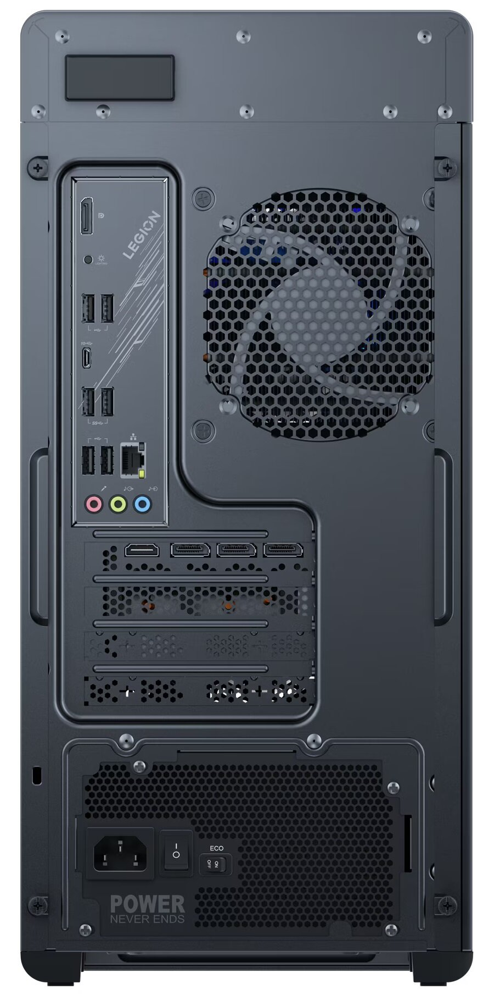
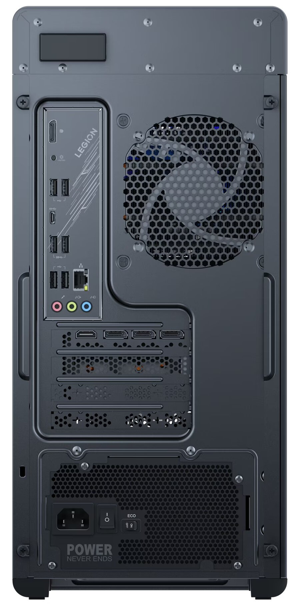

Monitor LG UltraGear 32GS95UV-B 31,5" 4K OLED Dual-Mode 240Hz-480Hz 0,03ms Gamingowy
Kod: 8978868
- Ekran: 31,5 ", OLED, 3840 x 2160
- Czas reakcji matrycy: 0,03 ms
- Częstotliwość odświeżania obrazu: 240Hz
- Złącza: DisplayPort x 1, HDMI 2.1 x 1, USB 3.0 / 3.1 x 3, wyjście liniowe audio
- Funkcje: HDR, pivot, głośniki, USB, NVIDIA G-Sync, AMD FreeSync, wąska ramka, Adaptive-Sync, regulacja wysokości
4037 PLN
4249 PLN
Cena z kodem obowiązuje do 31.01.2025 r.
Wysyłka:  Następny dzień roboczy
Następny dzień roboczy
Następny dzień roboczy